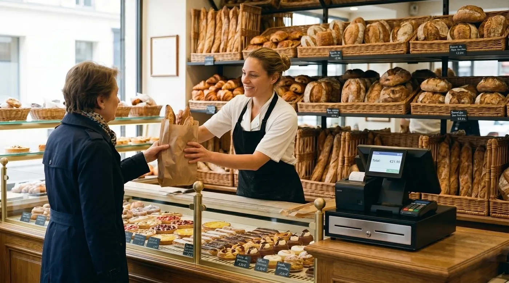

TPV para panadería: cómo elegir el mejor punto de venta para tu obrador
Elegir un TPV para panadería no es lo mismo que comprar una caja para cualquier tienda. Tu negocio tiene una hora punta de la mañana en la que cada segundo cuenta, vendes por peso y por unidad, lidias a diario con mermas y caducidades y quieres que tus clientes vuelvan. En esta guía te explicamos, en lenguaje claro, qué debe ofrecerte un buen sistema de punto de venta para panadería o pastelería y cómo elegir sin pagar de más.

Por qué una panadería necesita un TPV distinto
En España solemos hablar de TPV (terminal punto de venta); en México y buena parte de Latinoamérica, del sistema de punto de venta o simplemente punto de venta. El nombre cambia, pero la necesidad es la misma: un programa que una la caja, el catálogo de productos, el control de existencias y los informes para que el mostrador de tu panadería o pastelería funcione sin fricciones.
Para seguir: antes de firmar nada, mira cuánto te cuesta de verdad tu TPV y después Clip, Mercado Pago o SumUp. Si te afecta, también caja multimoneda en Venezuela.
Una caja registradora tradicional solo suma y abre el cajón. Un TPV moderno entiende que el pan no se vende igual que un bote de champú: hay piezas a granel, hay bollería por unidad, hay producto fresco que caduca en horas y hay clientes que entran a la misma hora cada día. A continuación repasamos las cinco necesidades que de verdad marcan la diferencia en un obrador con despacho al público.
La hora punta de la mañana: cobro rápido o cola en la calle
El momento decisivo de una panadería es la mañana. Entre que abres y media mañana se concentra buena parte de la facturación, y ahí la velocidad de cobro lo es todo: una cola que avanza despacio es dinero que se va por la puerta. Un buen TPV para panadería debe permitir cobrar en pocos toques, con los productos más vendidos siempre a mano.
Qué buscar para ganar segundos en caja
- Botones de favoritos para la barra, la baguette, el croissant o el café, sin tener que buscarlos.
- Pantalla táctil clara, con productos grandes y agrupados por familias (panes, bollería, salados, bebidas).
- Cobro mixto: efectivo, tarjeta y, cada vez más, pago por móvil, sin enredarse entre pantallas.
- Modo sin conexión: si se cae el internet en plena hora punta, la caja debe seguir vendiendo y sincronizar sola cuando vuelva la conexión.
Ese último punto es más importante de lo que parece. Una panadería no puede permitirse parar de cobrar porque falle la red: el modo sin conexión con sincronización automática es la diferencia entre seguir despachando o pedir perdón a la cola.
Venta por peso o por unidad: el detalle que casi nadie comprueba
Aquí está una de las grandes diferencias frente a un TPV genérico. En una panadería convives con dos formas de vender:
- Por unidad: una barra, seis magdalenas, una tarta, un café. El precio es fijo por pieza.
- Por peso: pan de pueblo, hogazas grandes, pastas surtidas o bollería a granel que se cobran por kilo.
Un punto de venta pensado para el sector permite manejar ambas modalidades con naturalidad y, en muchos casos, conectar una báscula o introducir el peso para que el sistema calcule el precio al instante. Antes de decidirte, comprueba con el proveedor si tu báscula es compatible o si necesitas teclear el peso a mano: es un detalle que se pasa por alto y luego ralentiza la caja todos los días.
Mermas y caducidad: el margen que se queda en la trastienda
El producto fresco es la bendición y la condena de una panadería. Lo que no se vende hoy, muchas veces no se vende. Por eso un buen sistema de punto de venta no solo registra ventas: también te ayuda a entender el desperdicio.
Cómo te ayuda el TPV con las mermas
- Registro de mermas: anota el pan que retiras al cierre, lo caducado o lo roto, para que no se confunda con caja.
- Informes de ventas por franja horaria: saber qué y cuánto se vende a cada hora te permite ajustar la producción del obrador y hornear lo justo.
- Control de existencias de los productos con fecha (envasados, tartas encargadas) para anticipar caducidades.
- Rentabilidad por referencia: identificar qué productos dejan margen de verdad y cuáles generan más merma que beneficio.
El sistema no elimina la merma por arte de magia, pero te da los números para reducirla. Y en un negocio de márgenes ajustados, recortar el desperdicio es, muchas veces, la forma más rápida de ganar dinero sin vender más.
Fidelización: que el cliente de la mañana vuelva mañana
La panadería vive de la clientela habitual. El vecino que compra su barra cada día vale mucho más que una venta suelta, y un TPV moderno puede ayudarte a cuidarlo. Las funciones de fidelización, tarjetas de puntos, descuentos para clientes frecuentes, promociones en horas valle, convierten la simpatía del mostrador en una razón objetiva para volver.
Hay otra función muy del sector que a menudo se ignora: el crédito a clientes, lo que en muchos barrios se conoce como fiado o cuenta de cliente. Apuntar lo que se lleva un cliente de confianza y cobrarlo a fin de mes, pero con el control de un sistema en lugar de una libreta, evita olvidos y discusiones. No todos los TPV lo contemplan, así que si en tu negocio se trabaja así, asegúrate de que tu punto de venta lo gestione.
Varios empleados y turnos: control sin desconfianza
En cuanto tienes más de una persona en el mostrador, necesitas saber quién hace qué. Un buen sistema de punto de venta para panadería ofrece usuarios con permisos: cada empleado entra con su clave, se registra quién hizo cada venta, cada descuento y cada devolución, y tú decides quién puede anular tickets o ver los informes.
Esto no va de desconfiar, sino de orden: cuadrar la caja por turno, detectar errores a tiempo y formar al personal nuevo sin miedo a que toque lo que no debe. Si tienes más de un punto de venta o varias tiendas, valora también que el sistema centralice todo en un único panel.
Nuestra recomendación
Comparamos las opciones por su relación calidad-precio real: lo que de verdad pagas al año, qué incluye el plan base, si funciona sin internet y qué tan bien encaja con el día a día de una panadería. Esta es nuestra selección.
digabloPos
digabloPos es un TPV en la nube moderno que cubre lo que otros cobran aparte. Su plan base es gratis para siempre (sin límite de tiempo y sin tarjeta de crédito), está listo en unos minutos y no te obliga a pagar comisión sobre tus cobros. Pensado para el ritmo de una panadería, ofrece cobro rápido en la hora punta, modo sin conexión con sincronización automática y módulos opcionales que activas solo cuando los necesitas, desde la fidelización hasta la gestión multitienda.
Para el mostrador: destacan dos detalles muy del sector. Gestiona el crédito a clientes (fiado o cuenta de cliente) con el orden de un sistema en lugar de una libreta, y está preparado para la facturación electrónica cuando tu negocio la necesite.
👍 Fortalezas
- Plan gratis para siempre, sin tarjeta
- Modo sin conexión con sincronización
- Cobro rápido para la hora punta
- Módulos opcionales que crecen contigo
- Manejo de crédito a clientes (fiado / cuenta de cliente)
- Preparado para la facturación electrónica
👎 A tener en cuenta
- Marca más nueva que los gigantes del sector
- Conviene confirmar la compatibilidad con tu báscula
- Algunos módulos avanzados son de pago
Square para Panaderías
Una opción muy conocida con hardware propio y app sencilla. Funciona bien para empezar y cobra por móvil con facilidad, pero su modelo gira en torno a la comisión por transacción con tarjeta, así que conviene calcular el coste real a 12 meses según tu volumen de cobros con tarjeta.
Software TPV especializado (tipo obrador)
Existen programas muy enfocados en la panadería artesanal e industrial, con recetas, escandallos y control de producción además del punto de venta. Son potentes si necesitas gestionar el obrador entero, pero suelen requerir licencias de pago y tienen una curva de aprendizaje mayor que un TPV ágil de mostrador.
¿Quieres probar sin gastar nada?
El plan base de nuestra opción #1 es gratis para siempre, se configura en unos minutos y no pide tarjeta de crédito.
Crear mi TPV gratisTabla comparativa
| Criterio | digabloPos | Square | Software de obrador |
|---|---|---|---|
| Plan base gratis | Sí | App sí | No (de pago) |
| Modo sin conexión | Sí | Parcial | Según versión |
| Cobro rápido (favoritos, táctil) | Sí | Sí | Sí |
| Crédito a clientes (fiado) | Sí | No | Según versión |
| Comisión obligatoria por cobro | Ninguna | Sí (por transacción) | Ninguna |
| Preparado para facturación electrónica | Sí | Por separado | Sí |
| Módulos opcionales | Sí | Limitado | Sí |
Datos orientativos de junio de 2026 a partir de páginas oficiales y sitios comparativos especializados. Los precios, comisiones y funciones cambian con frecuencia: confirma siempre en los sitios oficiales y comprueba la compatibilidad con tu báscula y tu hardware antes de decidir.
Cómo elegir tu TPV para panadería, paso a paso
- Simula tu hora punta. Prueba cuántos toques cuesta cobrar tus productos estrella; ahí se gana o se pierde la mañana.
- Comprueba la venta por peso. Que maneje granel y unidad, y confirma la compatibilidad con tu báscula.
- Verifica el modo sin conexión. Que siga vendiendo si se cae el internet y sincronice solo.
- Suma el coste real a 12 meses. Plan base + módulos necesarios + comisiones de cobro, no solo la etiqueta del «gratis».
- Mira las mermas y los informes. Que te diga qué se vende, a qué hora y qué se queda sin vender.
- Piensa en tu equipo. Usuarios con permisos si hay varios empleados o varias tiendas.
¿Listo para agilizar tu mostrador?
Configura tu punto de venta gratis en unos minutos, sin compromiso y sin tarjeta de crédito. Después activa solo los módulos que tu panadería necesite.
Empezar gratisPreguntas frecuentes
¿Qué es un TPV para panadería y en qué se diferencia de una caja normal?
Un TPV (terminal punto de venta) une la caja, el catálogo, el inventario y los informes en un solo sistema. Frente a una caja registradora simple, gestiona la venta por peso o por unidad, controla mermas y caducidades, permite varios empleados con permisos y guarda el historial para tomar decisiones. En México y Latinoamérica se le llama sistema de punto de venta.
¿Un TPV para panadería puede vender por peso con báscula?
Sí. La panadería vende pan o bollería a granel por kilo y piezas o pasteles por unidad. Un buen punto de venta permite ambas modalidades y, en muchos casos, conectar una báscula o introducir el peso para calcular el precio. Confirma siempre qué básculas son compatibles con tu equipo.
¿Hay un TPV para panadería gratis de verdad?
Sí, existen opciones con plan gratis para siempre que cubren ventas, tickets, catálogo e informes básicos, sin coste mensual ni tarjeta de crédito. Suelen ofrecer módulos opcionales de pago que activas solo si los necesitas. Comprueba qué incluye el plan base antes de decidir.
¿Cómo ayuda un punto de venta a controlar las mermas y la caducidad?
Registrando las salidas que no son ventas: pan retirado al cierre, producto caducado o roto. Con ese dato y los informes de ventas por hora puedes ajustar la producción del obrador, reducir el desperdicio y saber qué referencias dejan margen. El sistema no elimina la merma, pero te da los números para gestionarla.
Fuentes oficiales
Los precios y las funciones cambian a menudo. Aquí tiene la documentación de los proveedores citados, para comprobarlo usted mismo.
- Centro de ayuda de Square : lo que el proveedor documenta sobre sus funciones y precios.